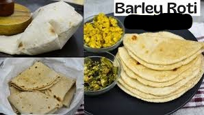
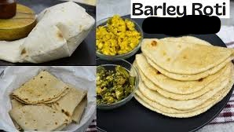

"Jaau ko Roti" is a traditional Nepali dish made from buckwheat flour. Buckwheat, known as "jaau" in Nepali, is a staple crop in the hilly and mountainous regions of Nepal. Jaau ko Roti is particularly popular in these areas due to the abundance of buckwheat cultivation and its nutritional value. Here's more about it: Ingredients: Jaau ko Roti is made primarily from buckwheat flour (jaau ko atta) and water. Sometimes, a small amount of salt is added for flavor. Preparation: The buckwheat flour is mixed with water to form a dough, which is then kneaded until it reaches the right consistency. Small portions of the dough are then rolled out into thin, round shapes using a rolling pin. Cooking Method: The rolled-out dough is cooked on a hot griddle or skillet until both sides are golden brown and cooked through. No oil or ghee is typically used in the cooking process. Texture and Flavor: Jaau ko Roti has a unique texture that is slightly denser and heartier compared to roti made from wheat flour. It has a nutty flavor characteristic of buckwheat, which adds depth to the taste. Serving: Jaau ko Roti is often served hot, straight from the skillet. It can be enjoyed with various accompaniments such as lentils, vegetables, pickles, or meats. It's a versatile dish that can be paired with both vegetarian and non-vegetarian curries and side dishes. Nutritional Value: Buckwheat is highly nutritious, rich in protein, dietary fiber, vitamins, and minerals. Jaau ko Roti provides essential nutrients and energy, making it a valuable addition to the Nepali diet, especially in regions where other grains may be less available. Overall, Jaau ko Roti is a simple yet essential dish in Nepali cuisine, providing nourishment, taste, and cultural value to those who enjoy it, especially in the hilly and mountainous regions where buckwheat cultivation is prevalent.
 
